Hackystat MDS supporting MSL MMR
Round 2 Results
Aaron Kagawa
Philip Johnson
Collaborative Software Development Laboratory
Department of Information and Computer Sciences
University of Hawaii
kagawaa@hawaii.edu
johnson@hawaii.edu
CSDL-04-07
http://csdl.ics.hawaii.edu/techreports/04-07/04-07.html
Last update: 07/01/2004 11:00:21 AM
Abstract
This report presents several screen shots of Hackystat Analyses that
were conducted on the Mission Data System's Release 9 (February 16 -
May 15, 2004). The goal of this report is to support a Monthly
Management Report by "telling a story" that provides upper management
with an idea of the progress of the Mission Data System.
Here are some hypothetical good high-level stories that we came up
with:
- The MDS development group is implementing requirements faster now
than they did before.
- The MDS development group is making less errors now than they did
before.
- The MDS development group is spending less time on errors now
than
they did before.
- Their development process is more predictable (i.e. stable) now
than it was before.
- They can support more developers now that they could before.
- They have less unscheduled work (IMs) than they did before.
- They perform less rework than they did before.
Note, these are unproven stories. However, these illustrate the types
of stories we would
like to portray in the Hackystat analyses.
1.0 MDS Progress
Each of the following subsection provides a screen shot of that
tells a specific part of the "MDS progress story".
NOTE: these images are screen shots and therefore lose all of the
"tool
tip" functionality that Hackystat provides.
1.1 Release Summary
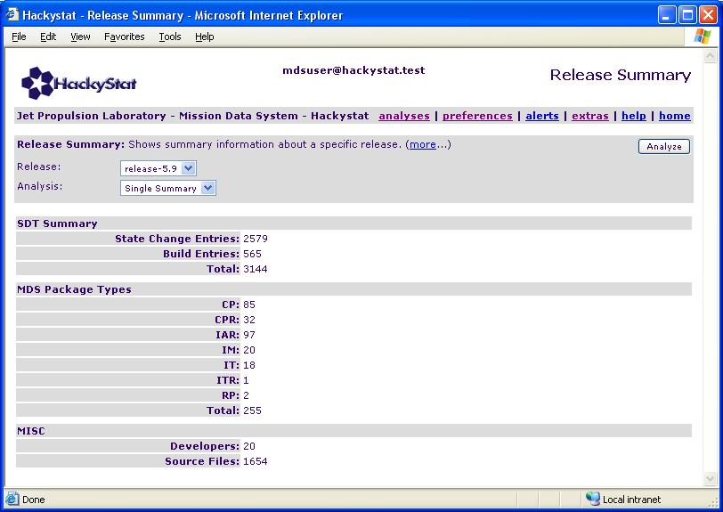
This screen shot provides some summary information about Release
5.9. The next screen shot puts these numbers into context by
comparing these values against past releases.
JPL Users: see the Release
Analysis to run this analysis on mds1.jpl.nasa.gov.
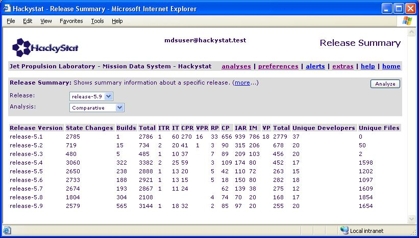
STORY: Discounting Release-5.1
to Release-5.4 due to insufficient data,
Release 5.9 shows steady process improvement over the past releases. In
Release 5.9 they were able to release more ITs, CPRs, and CPs while
keeping the number of IARs and IMs to a minimum. They were able to
accomplish this with a similar number of Harvest State Changes, thus
one could conclude their productivity and efficiency is increasing. One
could hypothesize that the slight rise of active developers contributed
to the increase of productivity and efficiency. In addition the
increase in the number of Builds in the system indicate
that the potential iteration between build problems and fixes occurred
more quickly than releases in the past.
JPL Users: see the Release
Analysis to run this analysis on mds1.jpl.nasa.gov.
1.2 Active Developers
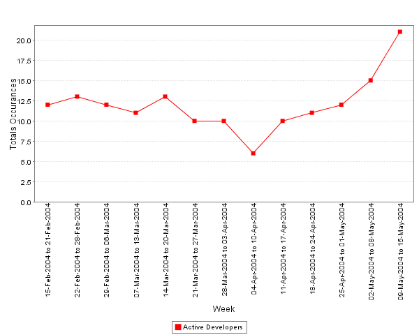
This screen shot shows the number of unique active developers that have
contributed to a Harvest State Change during the weekly interval for
Release 5.9. As you can see there was an average 12 developers
contributing to the Release 5.9 each week.
STORY: The upward trend of
active
developers at the end of a release is a recurring trend. This
upper trend is found to be associated with an upper trend in
Promotions. More specifically, it is associated with Promotions from
Dev -> Dev Complete.
1.3 Promotions
A Promotion is a Harvest State Change that results in a "higher"
State. For example, a State Change from Dev to Dev Complete is a
Promotion.
* NOTE - the measurement of Promotions does not include Promotions from
Integration Test -> Test Complete, Test Complete -> Release, and
Release - Release 5.x. These Promotions do not provide useful
information.
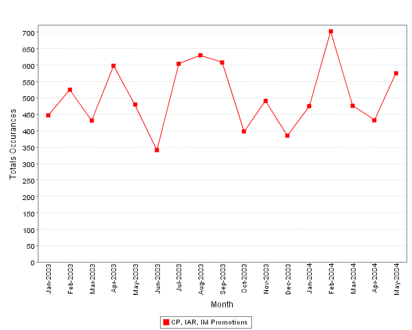
This screen shot shows that there is an average of 500 Harvest
Promotions each month.
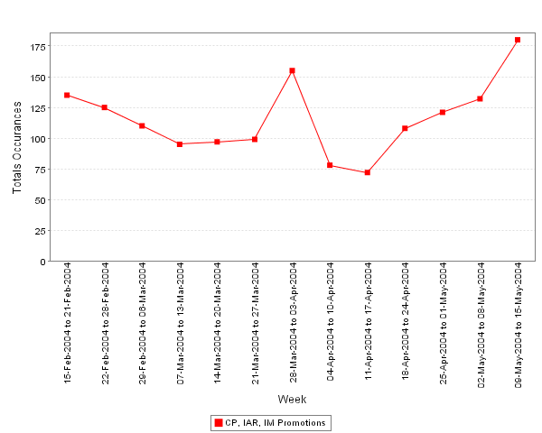
Breaking down a month into weeks and looking at Release 5.9 time period
we see that are about 115 Harvest Promotions a week. Again, you
can see that during the last two weeks before the release there is an
increase of Promotion activity.
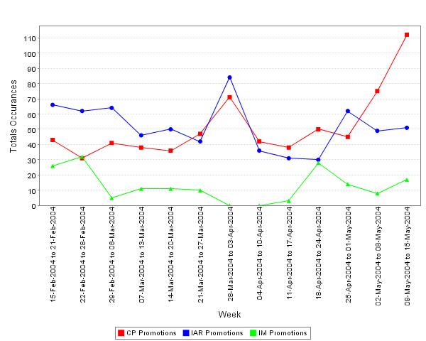
Drilling down into to the data again, we can look at the Promotions for
different package types. There are several interesting things in
this chart. (1) the number of Promotions for IARs and IMs trend
downward as we get closer to release and the number of Promotions for
CPs trend upward. (2) The trend of CPs upward at the end of the release
indicates that during the end of a release CPs dominate the work flow.
STORY: The past two Releases
(Release 5.9 and Release 5.8) share a similar increase of CP promotions
at the end of the Release time period. In addition, as we pointed out
in the previous section the number of active developers increases as
they near release. Therefore, it seems that nearing release CPs are
much
more efficiently moving through the work flow. However, we believe
this
trend isn't as good as it seems.
There are two possible reasons why this is occurring. (1) Developers
are
waiting till the end of the release to move their CPs or (2) More
CPs are created at the end of the Release cycle. We hypothesize
that both reasons are potentially bad. CPs contain the majority of the
functionality in MDS and integrating them late in the release cycle
could cause potentially cause problems near the release date.
To support this claim, investigate the Promotions for Release 5.8.
You will see the Promotions of CPs increasing dramatically at the end
of the Release cycle.
Then, in the beginnings of Release 5.9 CPs Promotions are low and IAR
and IM Promotions are high.
This indicates to us that there were problems the many CPs introduced
late into the baseline.
We therefore, predict that the beginning of Release 5.10 a similar
trend will occur.
1.4 Promotion vs Demotion
A Demotions is a Harvest State change that results in a lower Harvest
State. For example, Dev Complete to Dev.
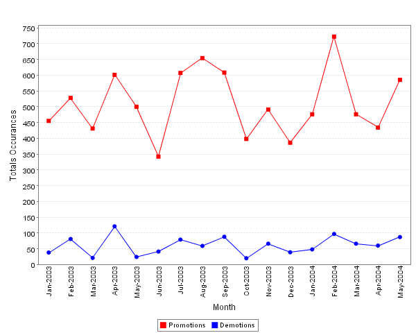
This screen shot shows that while the number of Promotions vary month
to
month, the number of Demotions are relatively constant.
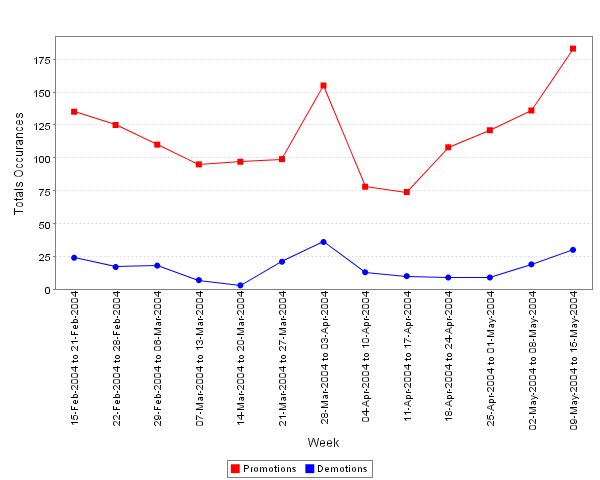
The time period of Release 5.9 shares a similar result.
STORY: Promotions vary and
Demotions are constant. This trend continues throughout all the
Releases. One hypothesis for the constant and lower
number of
Demotions is that there are relatively specific places and times where
Packages
can be demoted. If that is true then, if we can identify these
situations we could
possibly reduce the number of Demotions.
1.5 Throughput
Throughput is a measurement of a specific State Change. In the
following screen shots we measure the throughput of the Dev->Dev
Complete state change (i.e.. the number of packages that have a
Dev->Dev Complete state change in the specified interval). The
throughput measurement of Dev->Dev Complete accurately measures the
high level productivity and progress of development, because it is
during this state change where developers are actually coding the
system.
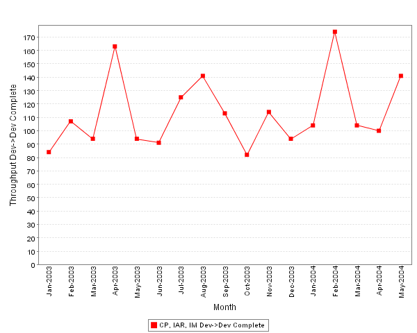
This screen shot is very similar to chart of total State Changes over
the same interval (see the first screen shot in section 1.3).
This indicates that the throughput of Dev->Dev Complete is the
driving
factor of the number of State Changes at this interval.
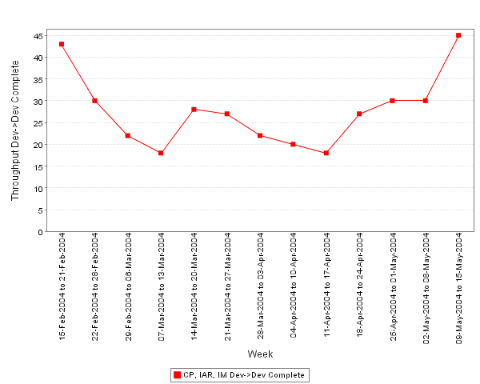
At the week interval the throughput measurement is slightly different
from the Promotion chart during the same period.
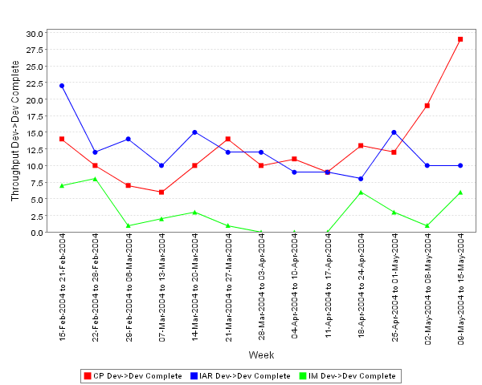
Drilling down into to the data again, we can look at the Throughput for
different package types. This screen shot indicates that early
in the release time period then main goal of development were to fix
and correct IARs and IMs. And in the last few weeks the goal shifted to
working on CPs. This further supports that the dramatic increase of
"work" CPs during the end of the release is happening.
1.6 Work vs Rework
Work is the measurement of the number of packages that transition from
Dev->Dev Complete for the first time. Rework is the measurement of
the number of packages that transition from Dev->Dev Complete for
any
number of times other than the first. The ideal situation for all
packages is that there is one and only one Dev->Dev Complete
Transition.
This situation means that there were no problems with the package and
it is
quickly integrated into the baseline. Of course that is impossible in
practice.
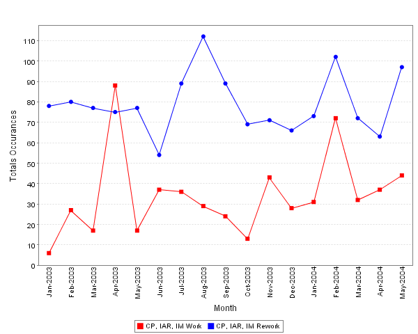
This screen shot shows that rework occurs on average about 3 times for
every 1 work.
STORY: The story here is that Work and Rework are unpredictable.
One the average Rework is usually higher on a larger monthly level.
However, in past releases there has been at most 3 weeks where the Work
level was higher than Rework.
1.7 Build Results
The Build Results analysis provides the number of specific build
results over time.
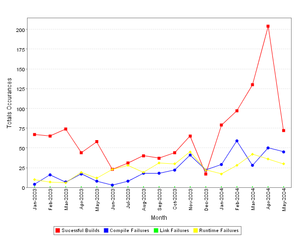
STORY: Successful Builds are occurring much more regularly. This
shows a
couple of things: (1) that there are more packages to build and (2) a
greater percentage of builds are successful. The data shows that the
increase of builds and successful builds leads to a less variable
distribution of the time packages spend in the Dev Harvest State and
therefore that leads to a less variable age distribution.
We have found that in Release, 5.9 in which the increase of builds and
successful builds, the number of packages in the build are
significantly less variable than past releases. It is not know whether
the number of packages in a build influences the number of builds
possible. However, there is evidence that building many packages
in a single build can lead to compile errors.
1.8 State Gantt
The State Gantt chart provides a Gantt representation of Packages as
they move through various Harvest States. This analysis simply provides
a visual representation of how packages move through the different
Harvest States. The following is the legend of the different colored
bars:
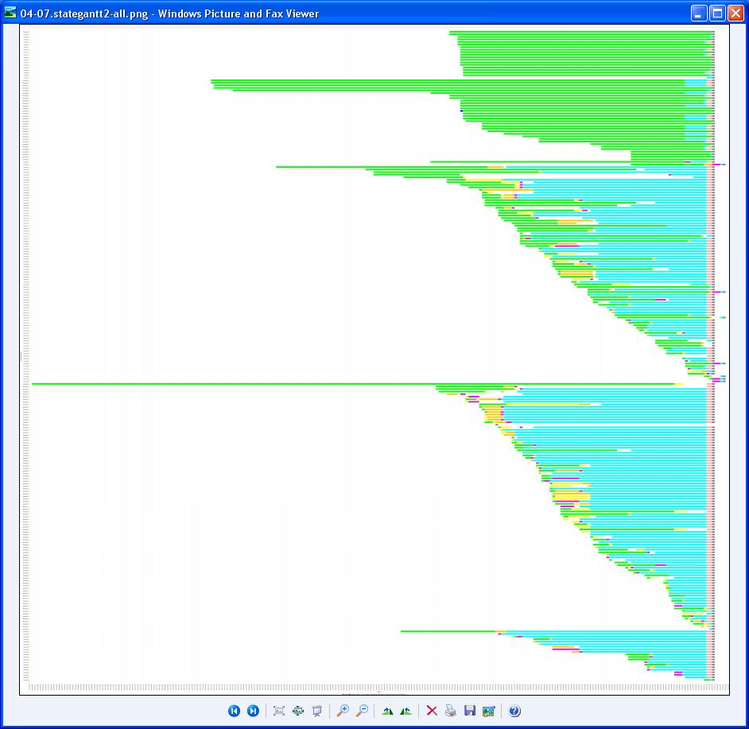
2.0 Response
The following are responses from individuals who have read this
document.
2.1 Rich Hug
[General comment]
Showing all packages as being equal skews many of the
package based observations/conclusions. The packages should be weighted
based on the complexity of the associated work done. One measure,
that we currently have the data for, is the number of files changed
associated with the package for each promotion from Dev to Dev
Complete. I think we should come up with a way to calculate a
"weight" of a package based on the work done. Then we could
monitor earned value and other nifty things like that.
[1.5 Throughput]
"This screen shot indicates that
early in the release time
period then main goal of development were to fix and correct IARs and
IMs. And in the last few weeks the goal shifted to working on CPs. This
further supports that the dramatic increase of "work" CPs during the
end of the release is happening.
"
I'm not so sure this is a proper interpretation of the promotion
chart. CPs by definition require larger chunks of effort to
implement. As a result, it takes some time to "fill the pipe"
before CPs are finished and can be promoted out of Dev.
[1.6 Work vs Rework]
I think this is the most important metric of the entire
report. At a superficial level, there appears to be a major
problem with the amount of rework. We really need to understand
the various reasons for the demotions. Is this a coding problem,
dependency problem, build problem, poor tests, unit tests not runs,
etc? Demotions that result in additional changes have a different
significance from demotions to eliminate a set of changes from a build
(typically done to solve dependency problems.)
{kind=link}